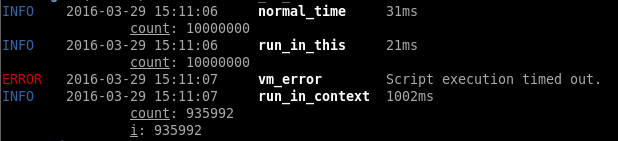

This is inspired from https://github.com/karpathy by Andrej Karpathy.
Vanilla LSTM with numpy
October 8, 2017
The model usually reaches a error of about 45 after 5000 iterations. However it sometimes get stuck in a local minima. Reinitialize the weights if this happens.
Should we switch from CoffeeScript?
September 28, 2016
A little background
At nearby.lk we moved our backend from python to node.js and then rewrote both the backend and UI code in CoffeeScript in late 2013. And we migrated all Javascript code to CoffeeScript at Forestpin in early 2014.
Then we replaced all HTML files and generated HTML content in CoffeeScript; initially with Coffeecup and then with Weya.coffee. So we only have Coffeescript and CSS in our projects.
Why we are considering to switch
There are two main reasons. First is that CoffeeScript is untyped. The second is the uncertainty of the future of CoffeeScript.
CoffeeScript is untyped and so is Javascript. This becomes a problem when you have a large code base. There can be hidden errors not covered by unit tests. Refactoring and making modifications is harder. Also, editors can give better code completion with typed languages. A typed language can introduce extra optimizations too, but I don't think this is done with likes of TypeScript.
The popularity of CoffeeScript is fading. There are a lot of posts about people moving away from CoffeeScript, and almost nothing about people adopting CoffeeScript. If CoffeeScript loses popularity there'll be fewer contributions to the CoffeeScript compiler project; it might not get updated along with developments of Javascript. However, CoffeeScript has so far adopted all new features of Javascript we found to be important (e.g. generators, modules).
What we will miss
We are certainly going to miss markup in CoffeeScript. Generating HTML text from Javascript is clean (with string concatenations and HTML tags).
@div ".users", ->
for user in users
@div '.user', on: {click: editUser}, ->
@span ".name", user.name
@span ".phone", user.phone
if v.image?
@img src: user.imageThe other thing we are going to miss is executable class bodies. This let us have mixins, bind this to event handlers, and even do things like check if all abstract methods are implemented. We use these quite often in our code.
What are we going to do
There was a new release of CoffeeScript, and there are discussions about CoffeeScript2 and about compiling CoffeeScript to ES6. So, hopefully, CoffeeScript will have a future.
Since the only immediate benefit of switching from CoffeeScript to TypeScript is type checking, we will stay with CoffeeScript for a while.
To keep our options open, I started a small side project in TypeScript. Apart from not having a nice way to generate HTML, the experience so far has been good. Typescript is less error prone and the editor code completion saves time. But the code is a lot longer (lines of code) and to me doesn't look as elegant as CoffeeScript - perhaps I need some more getting-used-to.
Wallapatta editor spelling checker
April 30, 2016
Wallapatta spell checker uses the 10000 word list1. The words not on the list are highlighted in red, and the words less commonly used are highlighted in shades of orange. This lets you help use simple language in your articles.

In the Wallapatta Chrome Editor, press to turn spell checking on and off.
Open sourcing nearby.lk data models library
April 29, 2016
We did a re-write of the nearby.lk data model library, and we decided to open source the core of it. It supports JSON or YAML data files, and parses them based on a specification (like a schema).
The specification is a coffeescript class with a render function. The editor checks the input against the specification and uses the render function to show the parsed input. The editor can either work in YAML mode (plain YAML input) or form input mode (user fills up a form). It can handle quite complex data models.
Here's the editor accepting (and rendering a resume).
This is the class for the Resume example.
class Resume extends Base
@extend()Set the type of the model.
type: 'Resume'Define properties. The type of the property is determined based on the property parameters. It defaults to Value property.
@property 'name', {}
...oneof specifies that the property is one of the models specified.
@property 'address',
oneof: ['Null', 'Address']This is a list of values. rows and columns are schema parameters for values.
@property 'statement',
list:
rows: 3
columns: 50This property is a list of other models.
@property 'timeline',
list:
oneof: ['Experience', 'Education', 'Recognition']
defaultValues: -> {from: '2010', to: '2020'}
...These are some private functions of the Resume model.
_education: ->
res = (e for e in @_values.timeline when e.type is 'Education')
res.sort (x, y) -> y._values.from - x._values.from
...This is the template to render the output.
template: (self) ->
values = self._values
education = self._education()
experience = self._experience()
recognitions = self._recognitions()
@div ".resume", ->
@div ".row", ->
@div ".six.columns", ->
@div ".name", "#{values.name}"
@div ".role", "#{values.role}"
if values.website isnt ''
@div ".website", ->
@a href: "#{values.website}", "#{values.website}"
if values.address.type isnt 'Null'
@div ".three.columns.address", ->
values.address.weya this
...New properties (e.g. image uploads) can be defined similarly.
Why did we need this?
On nearby.lk, we have local business information. Initially it was basic information like contact numbers, a small description, etc. Later, more details needed to be included. Also, the page structures differed based on the type of location. We didn't want to have the content in free flow. It's easier to make mistakes and not have uniform style with free text content. Also you can do a much better search with structured content.
nearby.lk is not yet running this re-written library. A little more work needs to be done to integrate this with the nearby search engine.
How to use it?
These samples show the classes for Resume example.
Embedding the editor
Mod.require 'Models.Editor', (Editor) ->
editor = new Editor
model: 'Resume' #Base model name
editor.render element,
width: width
height: height
onRendered
onRendered = ->
editor.yaml() #yaml edit mode
editor.structured() #structured edit mode
editor.resize #resize editor
width: width
height: height
editor.getModel() #return model object
#returns json object omiting default values
editor.getModel().getJSON()
#returns full json object
editor.getModel().getJSONFull()
editor.setJSON jsonObject #set json object contentUsing models
Mod.require 'Models.Models', (Models) ->
ModelClass = Models.get 'Resume'
model = new ModelClass
#parse json object
results = ModelClass.parse jsonObject
#results.score = How maching it was [0..1]
#results.errors = List of errors when parsing
#results.value = model
#returns json object omiting default values
model.getJSON()
#returns full json object
model.getJSONFull()
model.render element
model.html() #returns htmlPage Breaks
April 27, 2016
How to automatically add sensible page breaks?
In Wallaptta we model pagination as a cost minimization problem. That is, we try to find where to place page breaks so that there is no overflow and the cost is minimised. If the cost of adding a page break at a given point is know this can be easily solved with dynamic programming.
The question is how to determine the cost of adding a page-break at a given point.
First we calculated the cost based on the type of sections we split; e.g. list, paragraph, table, between to paragraphs, between two topics. This way the program would try to insert page breaks where the cost is less, like between two topics. Often inserting a page break will split multiple sections.
1 Item one
2 Item two
<<<<< Page break
Item two details
3 Item threeFor instance the above page break splits a set of paragraphs as well as a list of items. It's important to know the hierarchy of the document when calculating this cost.
When we first tried with just the above cost, it gave two main problems:
- Not splitting at the best points
e.g. when only 4 items would fit in a page
1. Item 1 <<<<< Page break 2. Item 2 3. Item 3 4. Item 4 5. Item 5The algorithm would place the break between 1 and 2, whilst the best place is between 4 and 5.
- Empty space
Like in the above example it would leave a lot of empty space in initial pages while filling up later pages.
The first reaction to this was to add breaks at later points if the cost is the same. This didn't work out well as there were instances where the cost of breaking at a earlier point was slightly less - although the cost was less it didn't look nice.
So we introduced a cost based on the height of upper-part of the sections we are splitting. And another cost based on the height of the page left empty.
The cost based on height of the upper-part is an inversely proportionaly to the height; i.e. there's a very large cost if you break a section right after the start. And the cost of empty pages is also inversely proportional to the height filled with content; i.e. a large cost if only a small portion of a page is filled. The empty page cost is not added for the last page.
This algorithm seem to give decent results so far. Here are some example
A few node.js/Javascript performance tips
March 19, 2016
Here's a list of small node.js related performance tips. I will keep updating this with new stuff we come across.
vm.runInContext vs vm.runInThisContext
runInContext and runInNewContext are much slower than runInThisContext.
Here's a small script that compares the performance with a simple for loop.
vm = require 'vm'
LOG = (require '../lib/log.js/log').log
N = 10000000
COUNT_SCRIPT = "for(var i = 0; i < #{N}; ++i) { count++; }"
T = (new Date).getTime()
count = 0
for i in [0...N]
count++
LOG 'info', 'normal_time', "#{(new Date).getTime() - T}ms", count: count
global.count = 0
script = new vm.Script COUNT_SCRIPT
T = (new Date).getTime()
try
script.runInThisContext timeout: 100
catch e
LOG 'error', 'vm_error', e.message
LOG 'info', 'run_in_this', "#{(new Date).getTime() - T}ms", count: global.count
sandbox = count: 0
context = vm.createContext sandbox
script = new vm.Script COUNT_SCRIPT
T = (new Date).getTime()
try
script.runInContext context, timeout: 1000
catch e
LOG 'error', 'vm_error', e.message
LOG 'info', 'run_in_context', "#{(new Date).getTime() - T}ms", sandboxThis is the output

Heap Limit
The heap size limit of node.js applications on 64-bit system is about 1.7gb. Fortunately, you can increase this by passing max_old_space_size parameter to node.
node --max_old_space_size=4096 [JS_FILE]However, typed arrays are not bound by this limit. That is, you can allocate a few gigabytes of memory to typed arrays without specifying the above parameter.
Parent of sliced string
Substrings of large strings keep a reference to the parent string. This eats up memory if you want to discard the parent string.
A quick hack of splitting and joining the substring solves this.
String join
String concatenation s += part eats up a lot of memory, that doesn't get garbage collected. It's ok for a few concatenations. Anything more than 10 should use Array.join.